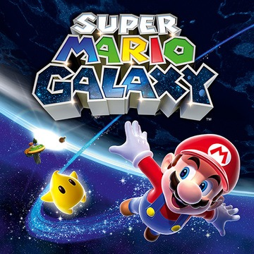

| Super Mario Galaxy | |
|---|---|
|  | |
| Developer: | Nintendo EAD Tokyo |
| Publisher: | Nintendo |
| Year Released: | 2007 |
| Sound Team: | See left. |
Game Description
Super Mario Galaxy is a 3D-Platforming adventure game, and one of the highest rated video games of all time. It was the third 3D game in the Super Mario series, with a setting in space filled with galaxies and planets to explore.
This game is notable for its use of a full live orchestra for most of the game's music, which diverged from the more traditional jazzy music present in previous Super Mario games. The soundtrack was mostly composed by a newer composer with the company, Mahito Yokota. However, to make sure that the music still captured the essence of the series, veteran composer Koji Kondo was brought on to coach Yokota as development went on.
Once the soundtrack was written, it was largely performed in a studio with an orchestra of about fifty musicians. The entire time, Shigeru Miyamoto, the creator of the Super Mario series was closely watching, and ultimately very pleased with the choice of using an orchestra for the soundtrack.
Soundtrack Contributors
| Name | Role |
|---|---|
| Koji Kondo | Composer |
| Mahito Yokota | Composer |
| Masafumi Kawamura | Sound Effects |
References Used
- “Iwata Asks: Super Mario Galaxy Volume 3: The Sound Team.” Iwata Asks, Nintendo, iwataasks.nintendo.com/interviews/#/wii/super_mario_galaxy/2/0. Accessed 30 June 2020.
- “Super Mario Galaxy.” Wikipedia, Wikimedia Foundation, en.wikipedia.org/wiki/Super_Mario_Galaxy. Accessed 30 June 2020.